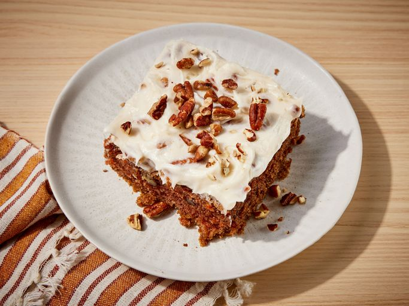

<!DOCTYPE html>
<html lang = "en"> </html>

<head>
    <meta charset="UTF-8">
    <title>Carrot Cake</title>
</head>

<body>
    <h1>Description</h1>
    
    <p>This carrot cake recipe with a homemade cream cheese frosting is my favorite, and I have tried many carrot cakes! It's moist, easy to make with grated carrots, and so delicious! </p>
    <h2>Ingredients</h2>
        <h3>Cake:</h3>
            <ul>
                <li>   2 ½ cups all-purpose flour, or as needed</li>
                <li>   ¾ teaspoon salt</li>
                <li> 1 envelope Fleischmann's® RapidRise Yeast*</li>
                <li> 1 cup very warm water (120 degrees F to 130 degrees F) </li>
                <li> 2 tablespoons olive oil </li>
            </ul>
        <h3>Frosting:</h3>

    <h2>Directions</h2>
        <ol>
            <li> <p> Combine 2 cups flour, salt, and yeast in a large bowl. Stir in very warm water and oil until combined, then stir in just enough of remaining 1/2 cup flour to make a soft dough. Knead on a lightly floured surface until smooth and elastic, 4 to 6 minutes. Cover and let rest for 10 minutes. </p> </li>
            <li><p> This dough will fit any of the following pan sizes: 10x15-inch pan, 9x13-inch pan, 14-inch round pizza pan, or two 9-inch deep-dish pizza pans. For individual pizzas, shape dough into six to eight 7-inch-diameter rounds.

                Preheat the oven to 400 degrees F (200 degrees C). Lightly oil your selected pan(s) and sprinkle with cornmeal. Shape dough into a smooth ball, then divide (if necessary) and roll to fit pan(s). Top pizza as desired. Bake in the preheated oven until crust is golden brown and cheese is melted, 20 to 30 minutes; baking time will depend on the size and thickness of the crust and the amount of toppings. </p></li>
        </ol>
</body>